2019 09 01 🍫（译）Java内存模型语义学
前言
Java内存模型（Java Memory Model，以后简称JMM）是Java规范中最复杂的部分，至少必须由程序库和运行时开发人员理解。不幸的是，它的措辞是这样的晦涩，以至于它需要一些资深人士为彼此破译它。当然，大多数开发人员并没有按照规定使用JMM规则，而是根据规则制定一些结构，或者更糟糕的是，盲目地复制高级开发人员的结构而不了解其适用性的限制。如果你是一个没有进入核心并发的普通人，你可以通过这篇文章，阅读高级书籍，如“Java Concurrency in Practice”。如果您是对所有这些工作感兴趣的高级人员之一，请继续阅读！
这篇文章是我今年在不同会议上发表的“Java Memory Model Pragmatics”演讲的记录副本，主要是俄语。世界上似乎提供可以容纳这么长时间的讨论的会议数量有限，并且需要在今年的JVMLS上为我的JMM研讨会揭露一些背景阅读，我决定将其转录。
我们将重用很多幻灯片，并且我将尝试基于它们构建叙述。当幻灯片不言自明时，有时候我会跳过没有叙述的。幻灯片有俄语和英语版本。下面的幻灯片是光栅化(rasterized)的，但具有很好的原始分辨率。
我要感谢Brian Goetz，Doug Lea，David Holmes，Sergey Kuksenko，Dmitry Chyuko，Mark Cooper，C.Scott Andreas，Joe Kearney以及其他许多人提供有用的评论和更正。关于最终字段的示例部分包含由Vladimir Sitnikov和Valentin Kovalenko解决的信息，并且是他们关于Final Fields Semantics的更大话题的摘录。
介绍

如果您阅读任何语言规范，您会发现它可以在逻辑上划分为两个相关但不同的部分。首先，一个非常简单的部分是语法，它描述了如何用该语言编写程序。其次，最大的部分是语义，它准确描述了特定语法结构的含义。语言规范通常通过执行程序的抽象机器的行为来描述语义，因此这种语言规范只是一个抽象的机器规范。

当您的语言具有存储（以变量，堆内存等形式）时，抽象机器也具有存储，您必须定义一组有关存储行为的规则。这就是我们所说的内存模型。如果您的语言没有显式存储（例如，您在调用上下文中传递数据），那么您的内存模型非常简单。在存储精通语言中，内存模型似乎回答了一个简单的问题：“特定读取可以观察到什么值？”
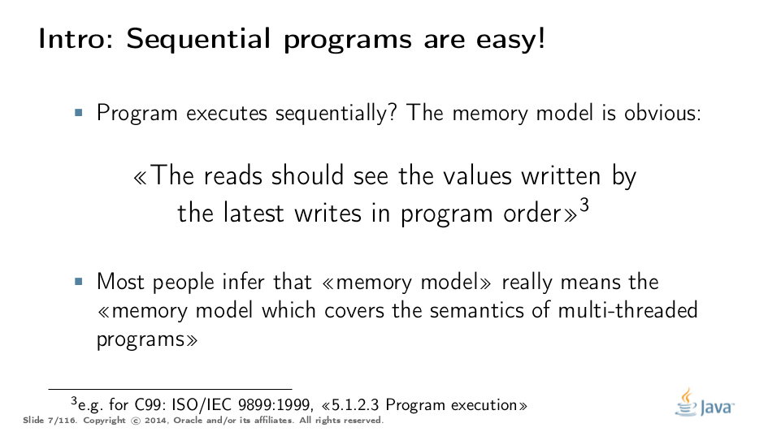
在顺序程序中，这似乎是一个空洞的问题：因为你有顺序程序，所以存储到内存中的是按照给定的顺序进行的，很明显读取应该按顺序观察最新的写入。这就是人们通常只为多线程程序遇到内存模型的原因，这个问题变得复杂了。然而，即使在连续的情况下，记忆模型也很重要（尽管它们通常在评估顺序的概念中巧妙地伪装）。

例如，C程序中未定义行为的臭名昭着的例子，它在序列点之间包含一些增量。该程序可以满足给定的断言，但也可以使其失败，或以其他方式召唤鼻子恶魔。有人可能会争辩说，这个程序的结果可能会有所不同，因为增量的评估顺序是不同的，但它不会解释，例如， 12的结果，当两个增量都没有看到另一个的写入值时。这是内存模型的关注点：每个增量应该看到什么值（并且通过扩展，它将存储什么）。
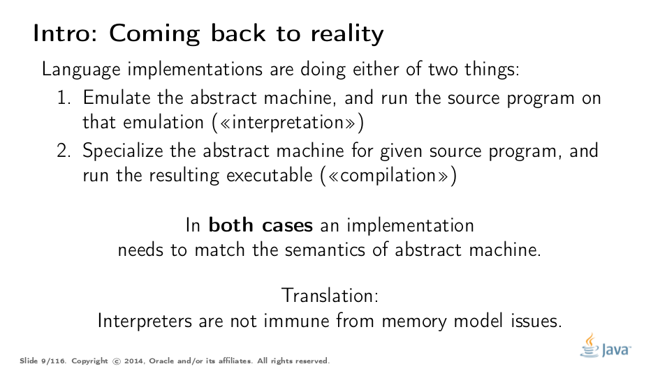
无论哪种方式，当提出实现特定语言的挑战时，我们可以采用两种方式之一：解释或将抽象机器编译到目标硬件。无论如何，解释和编译都通过Futamura Projections连接。 实际应用是解释器和编译器都负责模拟抽象机器。编译器通常被指责搞砸内存模型和多线程程序，但解释器也不能免疫。未能将解释器运行到抽象机器规范可能会导致内存模型违规。最简单的例子：将字段值缓存在解释器中的volatile读取上，您就完成了。这让我们进行了一次有趣的权衡。
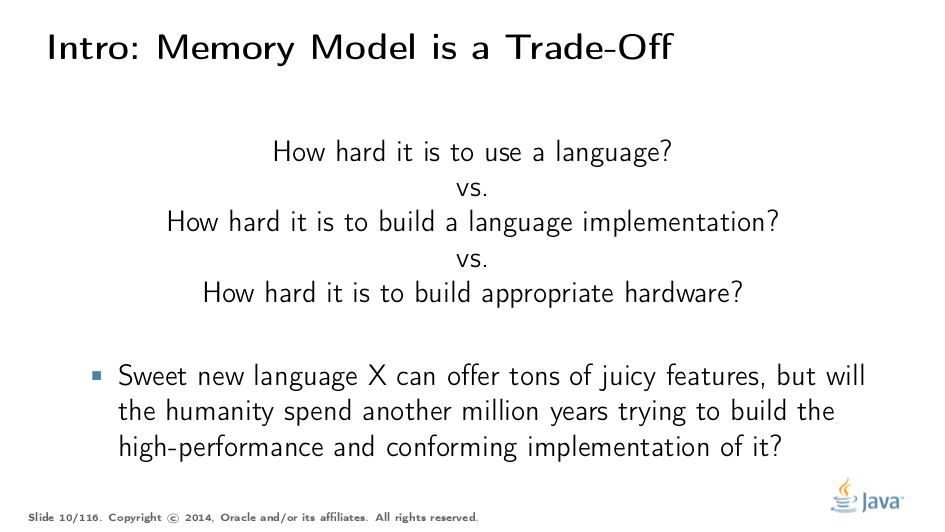
编程语言仍然需要智能开发人员的原因是没有超级计算机编译器。 “Hyper”并不夸张：编译器工程中的一些问题是不可判定的，即使在理论上也是不可解决的，更不用说在实践中了。其他有趣的问题在理论上可行，但不实用。因此，为了使实用（优化）编译器成为可能，我们需要在语言中造成一些不便。硬件也是如此，因为（至少对图灵机而言）它只是二氧化硅中的算法。

为了详细说明这个想法，其余的讨论结构如下。
第一部分 Access Atomicity
我们想要什么

在JMM中最容易理解的是访问原子性保证。为了或多或少地严格指定，我们需要引入一些符号。在此幻灯片的示例中，您可以看到包含两列的表。该表示法如下。标题中的所有内容都已经发生：所有变量都已定义，所有初始化的商店都已提交，等等。列是不同的线程。在此示例中，线程1将一些值V2存储到全局变量t中。线程2读取变量，并断言读取值。在这里，我们要确保读取线程仅观察已知值，而不是之间的某些值。
我们有什么

对于理智的编程语言来说，这似乎是一个非常明显的要求：你怎么可能违反这个，为什么？这就是原因。 为了在并发访问下保持原子性，你必须至少让机器指令以给定宽度的操作数操作，否则原子性在指令级别被破坏：如果你需要将访问分成几个子访问，它们可以交错。但即使你有所需的宽度指令，它们仍然可以是非原子的：例如，对于PowerPC来说，2字节和4字节读取的原子性保证是未知的（它们暗示是原子的）。

但是，大多数平台都能保证最多32位访问的原子性。这就是我们在JMM中做出妥协的原因，它放宽了64位值的原子性保证。当然，仍然存在对64位值强制执行原子性的方法，例如，通过悲观地获取更新和读取锁定，但这将付出代价，因此我们提供了一个逃生舱：用户将volatile放在需要原子性的位置，并且VM和硬件协同工作以保留它，无论成本是多少。
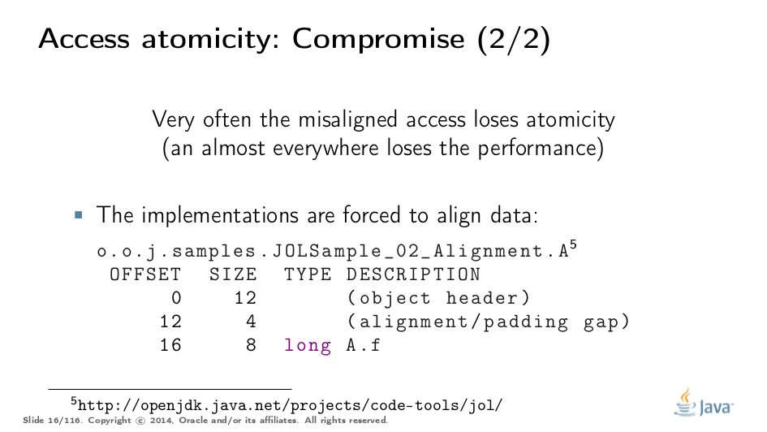
但是，在大多数硬件上，使用所需宽度的操作来维持原子性是不够的。例如，如果数据访问导致多个事务到内存，则即使我们执行了单个访问指令，原子性也会关闭。例如，在x86中，如果读/写跨越两个高速缓存行，则不保证原子性，因为它需要两个内存事务。这就是为什么通常只有对齐的读/写是原子的，这迫使VM对齐（align）数据。
在这个由JOL打印的示例中，我们可以看到在对象start的偏移量16处分配了长字段。与8字节的对象对齐相结合，我们具有完美对齐的长度。现在，如果我们知道它不是易失性的话，它就不会违反内存模型，如果我们知道它不是易失性的，那只能在x86上运行（其他平台在执行错位访问时可能会非常不同意），并且可能存在性能劣势。
Test Your Understanding
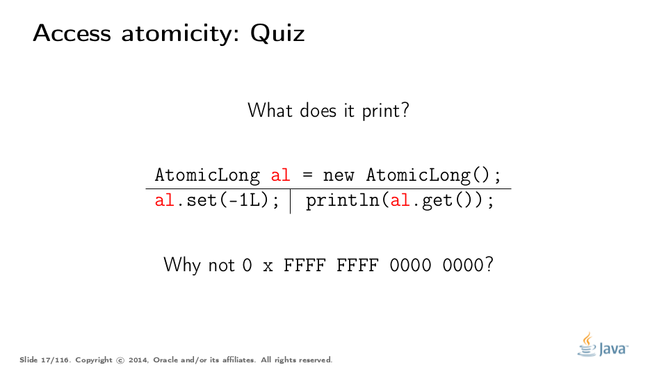
让我们通过一个简单的测验来测试我们的理解。设置-1L相当于将所有位设置为1。 答案（选择过来揭示）：不涉及任何魔法; AtomicLong内部的一个不稳定的长场保证了这一点。这是语言规范所要求的，并且此示例无需对VM端的AtomicLong进行特殊处理。
值类型和C/C++（Value Types and C/C++）
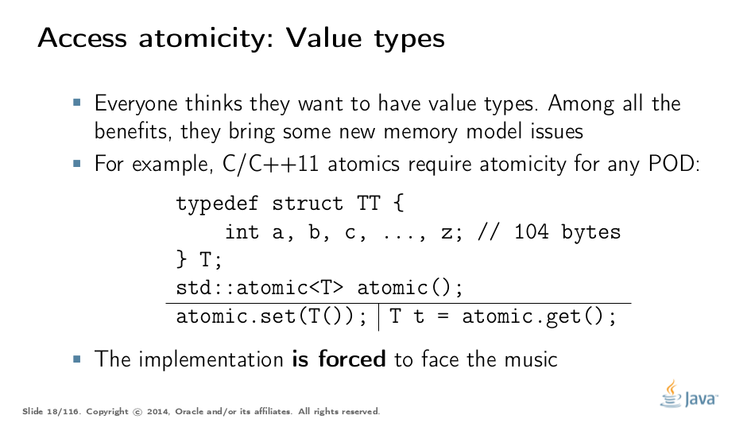
在Java中，我们“幸运”拥有内置类型的小宽度。在提供值类型的其他语言中，类型宽度是任意的，这给内存模型带来了有趣的挑战。
在此示例中，C++通过支持结构来遵循C兼容性。 C++11还支持std::atomic，它需要每个普通旧数据（POD）类型T的访问原子性。因此，如果我们在C++11中做这样的技巧，那么实现将被迫处理原子写入并读取104字节的内存块。没有机器指令可以保证这些宽度的原子性，因此实现应该采用CAS-ing或锁定或其他方式。
（它变得更有趣，因为C++允许单独编译：现在链接器的任务是确定这个特定的std::atomic使用了什么锁/CAS保护。我不完全确定如果线程执行的话会发生什么上例中不同编译器生成的代码。）
JMM Updates
本节介绍更新的Java内存模型的原子性注意事项。请在另一篇文章中查看更全面的解释。

2014年，我们是否要重新考虑64位异常？当long和double的竞争更新有意义时，很少有用例。在可扩展的概率计数器中。开发人员可能有理由希望long/double访问在64位平台上是原子的，但是如果代码是在32位平台上意外运行的话，它们仍需要volatile。标记字段volatile会支付内存障碍（memory barriers）的成本。
换句话说，由于volatile重载了两个含义：
- 访问原子性;
- 内存排序
你不能得到一个没有另一个作为行李。可以推测删除64位异常的成本。由于VM通过发出特殊指令序列来分别处理访问原子性，因此我们可以在需要时将VM破解为无条件地发出原子指令序列。
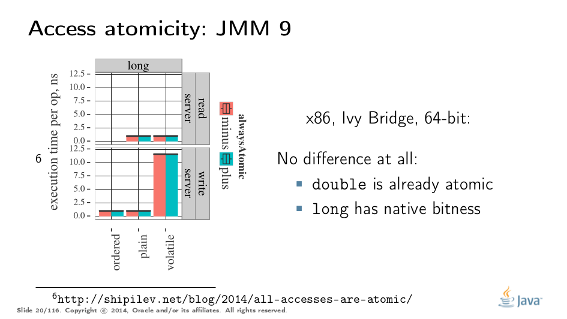
理解此图表需要一些时间。我们可以测量longs的读取和写入 - 每种访问模式三次（plain，volatile和通过 Unsafe.putOrdered）。如果我们正确地实现该功能，那么在64位平台上应该没有区别，因为访问已经是原子的。实际上，64位Ivy Bridge上的彩色条之间没有区别。 注意volatile long写的重量级是多少。如果我只想要原子性，我会为内存排序支付这笔成本。
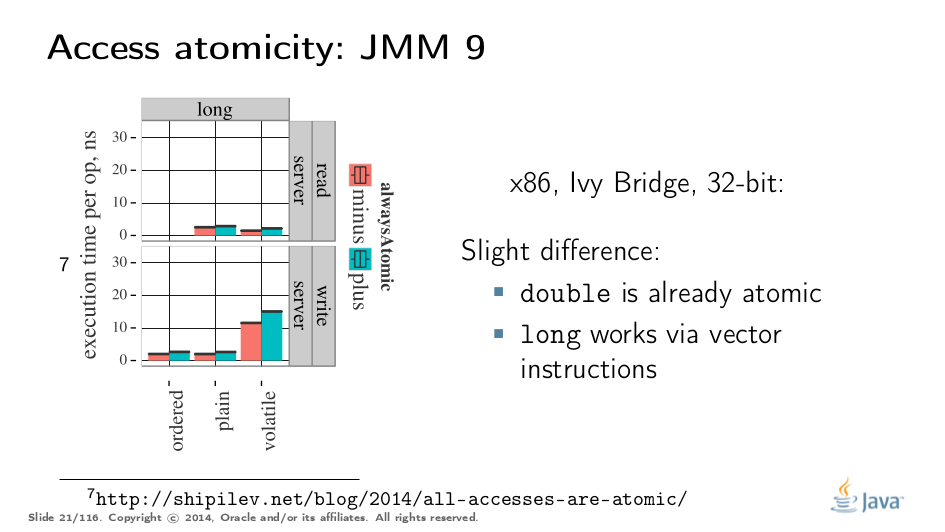
处理32位平台时会变得更加复杂。在那里，您需要注入特殊的指令序列来获得原子性。在x86的情况下，即使在32位平台中，FPU加载/存储也是64位宽。您支付“冗余”副本的费用，但不是那么多。

在非x86平台上，我们还必须使用替代指令序列来重新获得原子性，并具有可预测的性能影响。请注意，在这种情况下，同样在32位x86的情况下，volatile通过强制原子性稍微慢一点，但这是系统错误，因为我们还需要将值转储到long字段中以防止某些编译器优化。
第二部分 字节撕裂（Word Tearing）
我们想要什么

字节撕裂与访问原子性有关。 如果两个变量是不同的，那么对它们的操作也应该是不同的，并且不应受相邻元素上的操作的影响。这个例子如何打破？非常简单：如果我们的硬件无法访问不同的数组元素，它将被强制读取多个元素，修改一堆中的一个元素，然后将整个元素放回去。
如果两个线程在它们各自的元素上进行相同的dance，则可能会发生另一个线程将其自己的步骤存储回内存，从而覆盖由第一个线程更新的元素。对于毫无戒心的用户而言，这可能并且将会引起很多麻烦，因为如果没有语言规范中的明确规定，运行时可以自由地应用可能导致难以诊断的错误的转换。
我们有什么
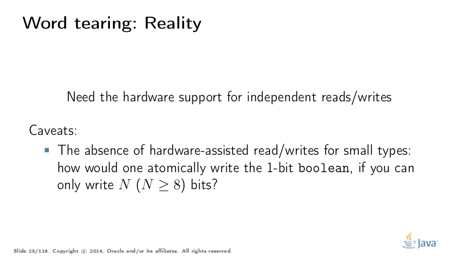
如果我们想禁止字节撕裂，我们需要硬件支持给定宽度的访问。在boolean[]数组或一组布尔字段的最简单场景中，您无法在大多数硬件上轻松访问单个内存位，因为较低的可寻址性边界通常是单个字节。
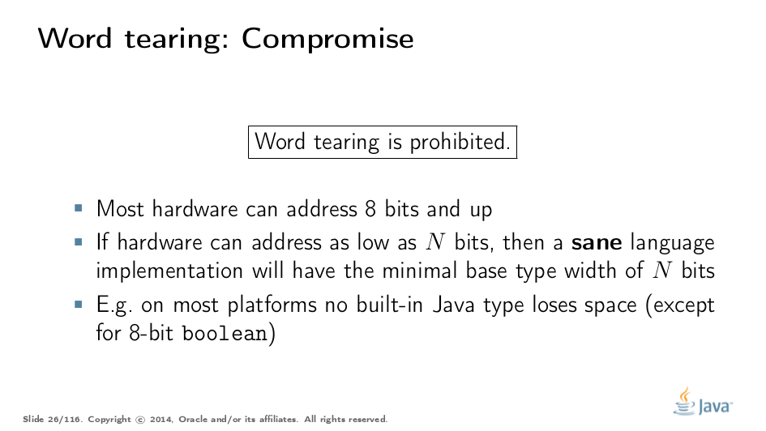
值得注意的是，这些天你必须向程序员解释字节撕裂。大多数系统程序员从前几天都非常熟悉它，并且理解在真实系统中追逐这样一个bug的恐怖。
因此，Java，目标是一种理智的语言，禁止字节撕裂。Bill Pugh（FindBugs是他最有特色的作品，但他也是JMM JSR 133的领导者）对此非常清楚。我曾经在C++程序中追逐一个破坏字的错误 - 不是很有趣。
这个要求似乎很容易适应当前的硬件：您可能关心的唯一数据类型是布尔值，您可能希望采用完整字节而不是单个位。当然，您还需要驯服任何可能缓冲读取和写入以及相邻数据的编译器优化。
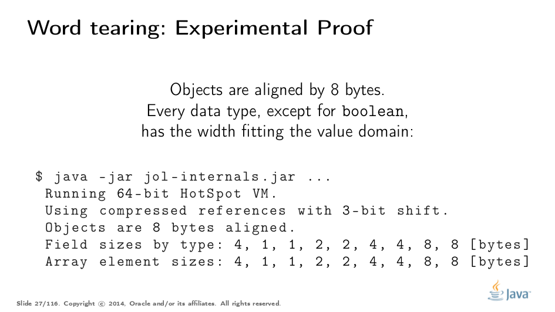
大多数人在文档中查找允许的基础类型值范围，并从那里推断机器表示宽度。您只能表示最小机器宽度来表示，例如long有2^64个案例。它并不强制运行时实际为每个long分配8个字节;它原则上可以使用128字节长，只要它有一些奇怪的原因是实用的。 但是，我所知道的大多数运行时都是实用的，并且机器表示宽度非常适合值域，不会浪费空间。正如我之前所说，boolean是这条规则的唯一例外。 JOL试图找出实际的机器宽度，你可以在这张幻灯片上看到刻度。这些数字分别是引用，boolean，byte，short，char，int，float，long和double所占的字节数 - 正是我们所期望的那样。其他平台可能被认为......很奇怪。
Test Your Understanding

答案（选择结束显示）：任何（真，真），（假，真），（真，假），因为BitSet密集存储在long[]数组中的位并使用位魔术来访问特定位。它在内存占用方面获得了巨大的成功，它摆脱了语言的语言保证。 （BitSet Javadocs说多线程用法应该是同步的，所以这可以说是一个人为的例子）
布局控制和C/C ++（Layout Control and C/C++）

相当多的人希望控制特定类的内存布局，以便在边缘情况下获得更好的占用空间，和/或更好的性能。但是在一种允许对其变量进行任意布局的语言中，您不能始终禁止字节撕裂，因为您必须付出代价，如本示例所示。
没有机器指令可以一次写入7位，或者一次只能读取3位，因此如果它们的任务是避免字节撕裂，则需要实现创造性。 C/C++ 11允许你使用这个锋利的工具，但告诉你，一旦你开始，你就是你自己。
JMM Updates

没有人质疑字节撕裂应该被禁止。
第三部分 SC-DRF
我们想要什么
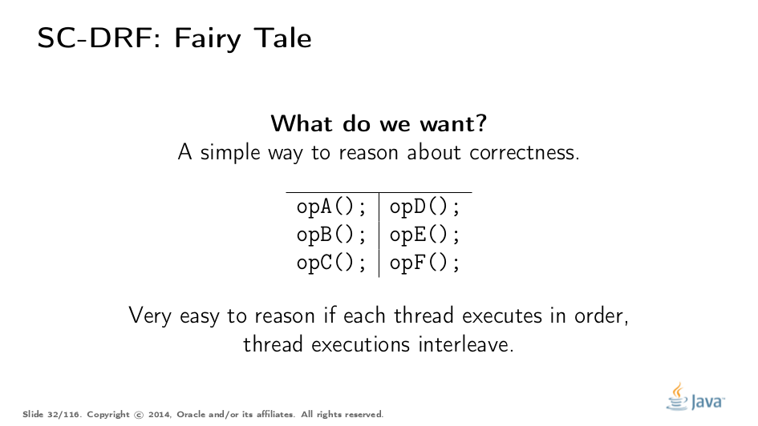
现在我们开始讨论内存模型中最有趣的部分：关于程序读取的推理。很自然地认为程序正在以某种全局顺序执行它们的语句，有时在线程之间切换。这是一个非常简单的模型，Lamport已经为我们定义了它：顺序一致性。

注意突出显示。顺序一致性并不意味着操作是按特定的总顺序（total order）执行的！ （更严格的一致性提供了这一点）。重要的是，结果与具有总操作顺序的执行无法区分（indistinguishable）。我们将执行称为顺序一致的执行（sequentially consistent executions），并将其结果称为顺序一致的结果（sequentially consistent results）。

SC显然为我们提供了优化代码的机会。由于我们不受实际总执行顺序的约束，但只需假装有一个，我们可以进行有趣的优化。例如，这个程序转换不会破坏SC：显然原始程序的SC执行会产生相同的结果（假设没有人关心a和b的值）。
请注意，SC允许我们缩小可能的执行集。在极端情况下，我们可以自由选择单个订单并坚持下去。
我们有什么
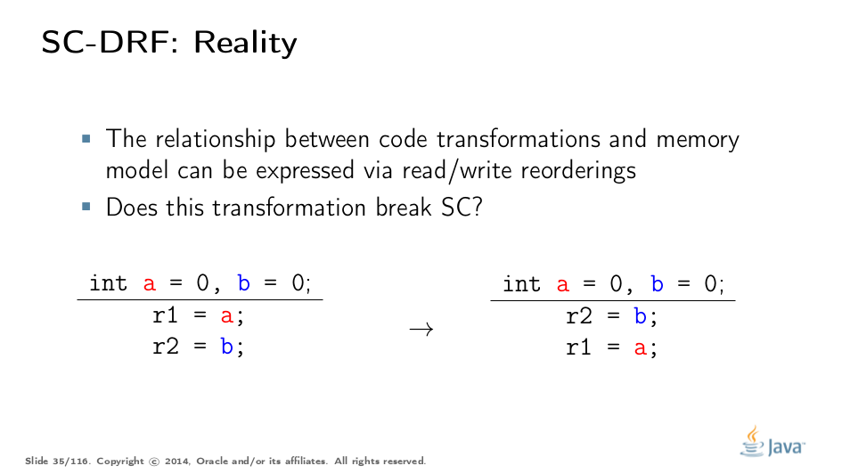
但是，SC的可优化性被高估了。请注意，当前的优化编译器，更不用说硬件，只关心当前的指令流。那么，如果我们在指令流中有两个读取，我们可以像在这个例子中那样对它们进行重新排序并维护SC吗？

事实证明，你做不到。如果程序的另一部分将值存储到a和b中，则读取重新排序会破坏SC。实际上，在SC下执行的原始程序只能得到匹配（*，2）或（0，*）的结果，但修改后的程序，即使以总顺序方式执行，也会产生（1,0），令人困惑的开发人员期望SC来自他们的代码。
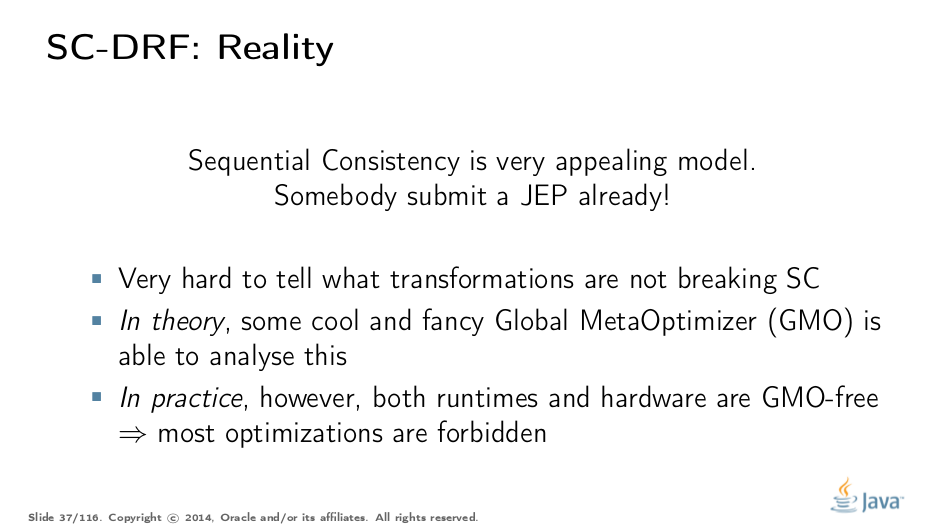
那么，你可以看出，即使是一个非常简单的转换也是合理的，你需要复杂的分析，而这种分析并不容易扩展到现实的程序。从理论上讲，我们可以拥有一个可以执行此分析的智能全局优化器（GMO）。我认为转基因生物的存在与拉普拉斯的恶魔的存在密切相关。
但由于我们没有转基因生物（GMO），所以所有的优化都是保守的，因为担心无意中违反了SC，这会导致性能损失。所以呢？我们可以不进行转型，对吧？不太可能：即使是非常基本的转变也是被禁止的。想一想：如果有效地消除了程序中其他地方的读取，即重新排序，你能把变量放在寄存器上吗？

...虽然我们可以禁止编译器中的一些优化以阻止在其他SC程序中造成严重破坏，但硬件无法轻易协商。硬件已经重新安排了许多东西，并提供昂贵的逃生舱（escape hatches）以恐吓重新排序（“内存屏障”）。因此，一个不能控制可能转换的模型以及鼓励进行哪些优化的模型实际上并不能以良好的性能运行。例如，如果我们要求语言中的顺序一致性，我们可能不得不悲观地围绕几乎每一次内存访问发出内存障碍，以便杀死硬件尝试“优化”。

此外，如果您的程序包含竞争，则当前硬件不保证这些冲突操作的任何特定结果。 Hans Boehm和Sarita Adve坚定不移。

因此，为了将现实融入到具有合理性能的模型中，我们需要削弱它。
Java Memory Model
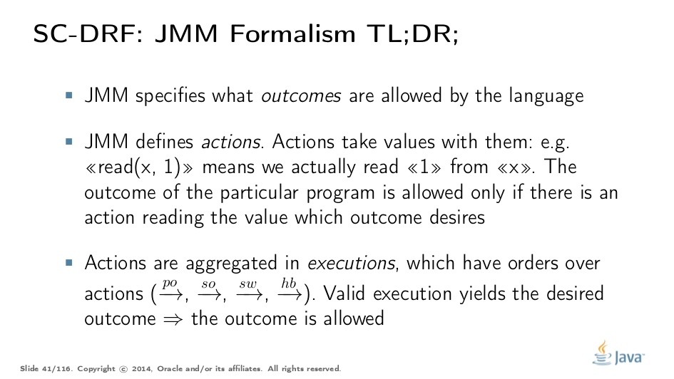
这是事情变得更加复杂的地方。由于语言规范应该涵盖语言中可以表达的所有可能的程序，我们无法真正提供有限数量的结构，这些结构可以保证工作：它们的联合将在语义上留下白点，并且白点是坏的。 因此，JMM试图立即涵盖所有可能的程序。它通过描述抽象程序可以执行的操作来实现，并且这些操作描述了在执行程序时可以产生哪些结果。操作在执行中绑定在一起，执行将操作与描述操作关系的其他订单组合在一起。这感觉非常象牙塔式，所以我们马上就去看看吧。
Program Order

第一个订单是程序订单（PO）。它在单个线程中对操作进行排序。注意原始程序，以及该程序可能的执行之一。在那里，程序可以从x读取1，通过else分支读取，将1存储到z，然后继续从y读取内容。

程序顺序是总计（在一个线程内），即每对动作与该顺序相关。了解一些事情很重要。
按程序顺序链接在一起的操作不排除“重新排序”。事实上，谈论行动的重新排序有点令人困惑，因为人们可能打算在程序中谈论声明重新排序，这会产生新的执行。那么这个新计划产生的执行是否违反了JMM的规定将是一个悬而未决的问题。
程序顺序没有，我再说一遍，不提供订购保证。它存在的唯一原因是提供可能的执行和原始程序之间的链接。
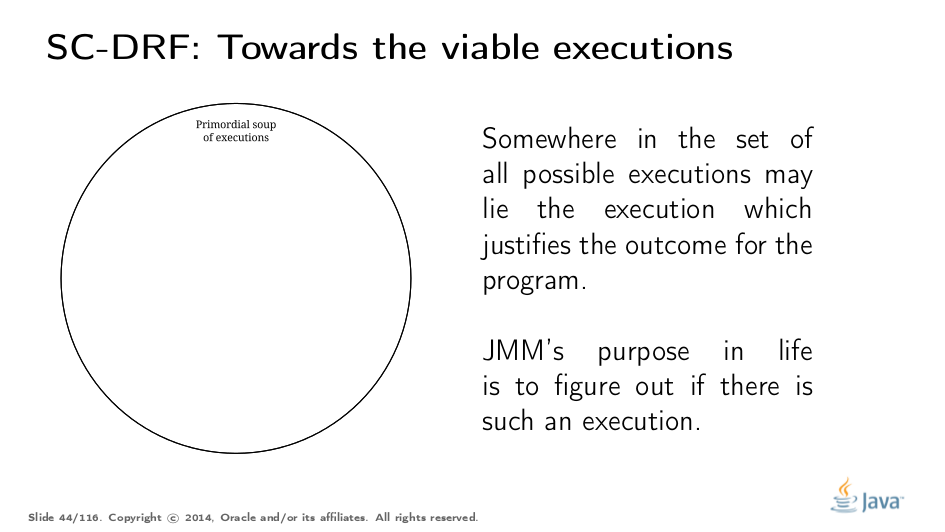
这就是我们的意思。给定动作和执行的简单示意图，您可以构造无限数量的执行。这些处决脱离了任何现实;它们只是“原始汤”，包含一切可能的建筑。在这个汤的某个地方浮动可以解释给定程序的特定结果的执行，以及所有这些合理执行的集合涵盖了该程序的所有合理结果。

这是程序顺序（PO）跳入的地方。为了过滤掉我们可以理解特定程序的执行，我们有线程内一致性规则，它消除了所有不相关的执行。例如，在上面的例子中，尽管所示的执行是抽象可能的，但它与原始程序无关：在从x读取2之后，我们应该写入1到y，而不是z。
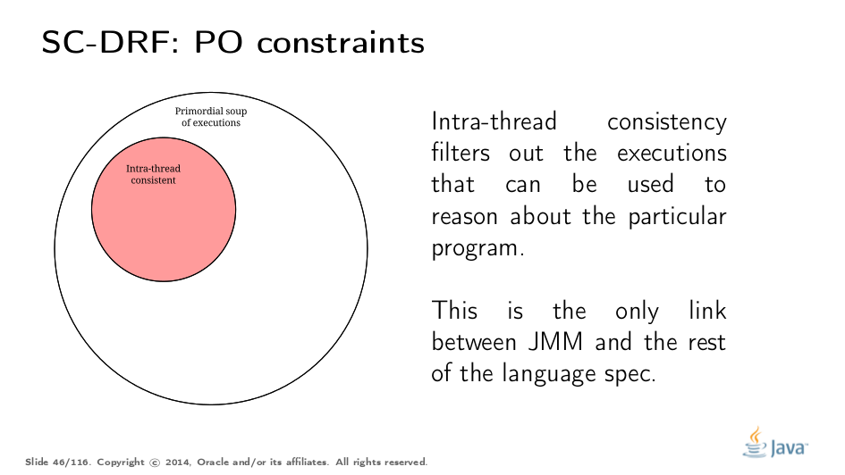
以下是我们如何说明这种过滤。线程内一致性是第一个执行过滤器，大多数人在处理JMM时都会隐含在其中。在这一点上你可能会注意到JMM是一个非建设性的模型：我们不是归纳地建立解决方案，而是采用整个执行领域，并过滤掉那些对我们感兴趣的东西。
Synchronization Order

现在我们开始构建真正命令的模型的一部分。在弱内存模型中，我们不会对所有操作进行排序，我们只对一些有限的基元强加一个硬命令。在JMM中，这些原语包含在各自的同步操作中。
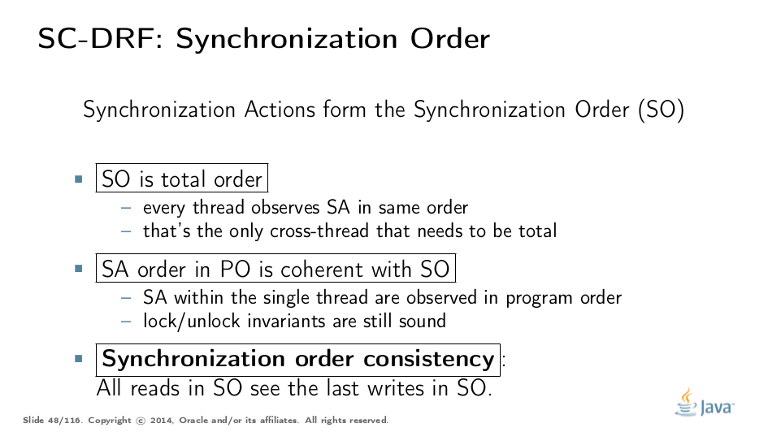
同步顺序（SO）是跨越所有同步操作的总顺序。但这不是关于这个订单最有趣的部分。 JMM提供了两个额外的约束：SO-PO一致性和SO一致性。让我们使用一个简单的例子来解包这些约束。

这是一个源自Dekker Lock的相当简单的例子。试着想一下允许的结果和原因。之后，我们将继续使用JMM进行分析。
下面的幻灯片是不言自明的，我们将跳过它们：
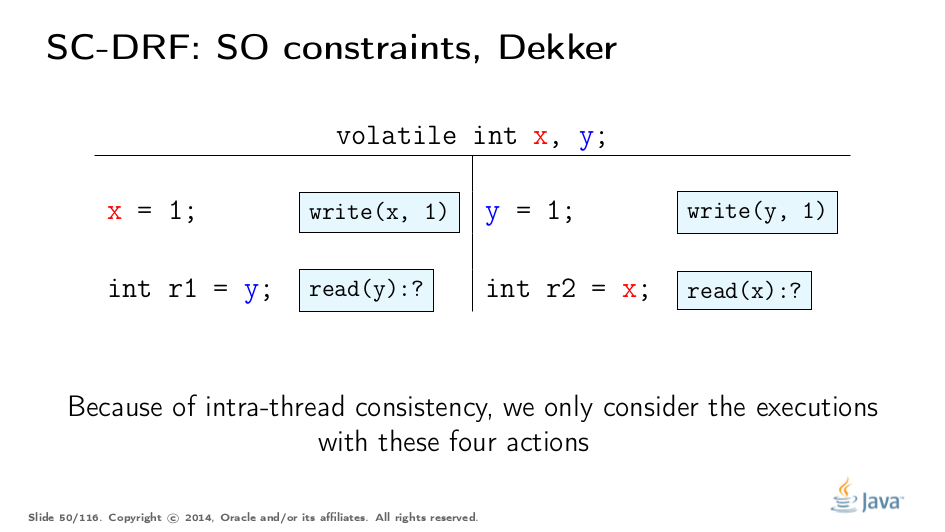

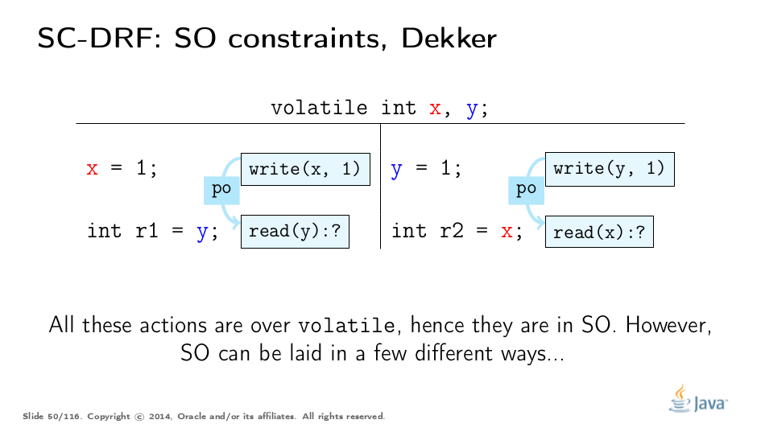
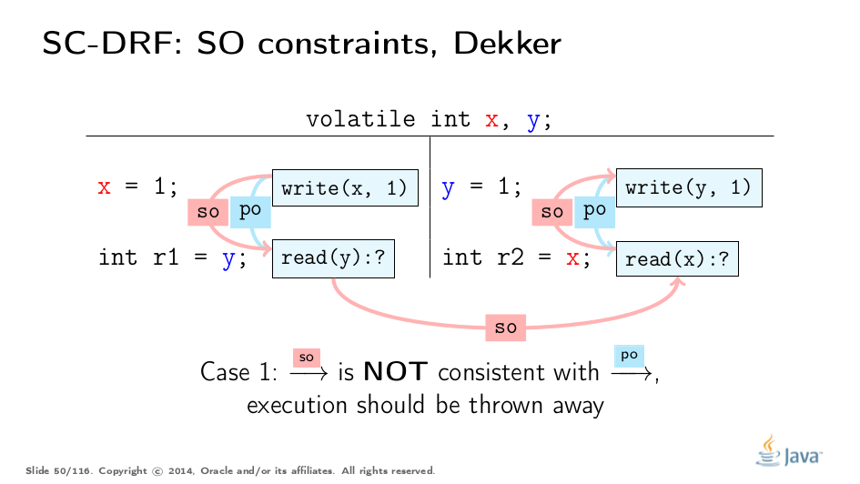


现在，如果我们更仔细地研究这些规则，我们会注意到一个有趣的属性。 SO-PO一致性告诉我们SO中的效果是可见的，好像动作是按程序顺序完成的。 SO一致性告诉我们要观察SO之前的所有动作，即使是那些发生在不同线程中的动作。就好像SO-PO一致性告诉我们遵循程序，SO一致性允许我们“在线程之间切换”，所有效果都落后于我们。与SO的整体混合，我们得出一个有趣的规则：
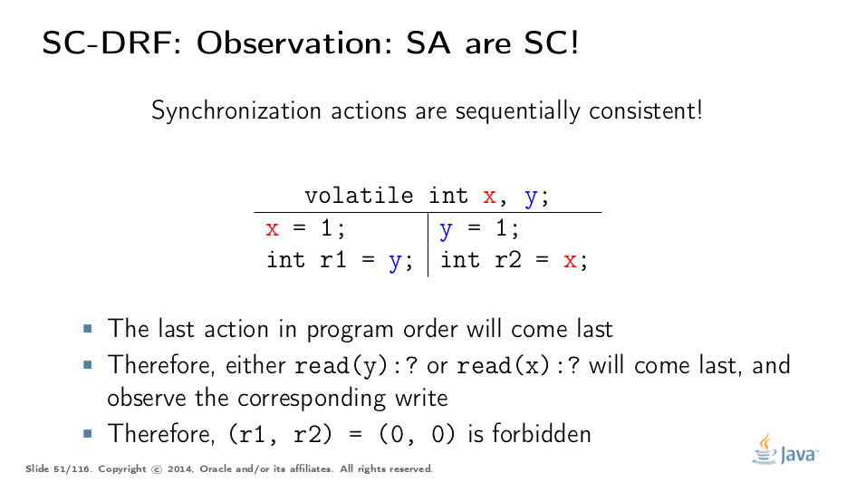
同步操作（Synchronization Actions ）是顺序一致（sequentially consistent）的。在由volatiles组成的程序中，我们可以在没有深思熟虑的情况下推断结果。由于SAs是SC，我们可以构造所有的动作交错，并从中找出结果。请注意，之前没有“先发生过（happens before）”;这足以说明原因。

IRIW（Independent Reads of Independent Writes）是SO属性的另一个很好的例子。同样，所有操作都会产生同步操作。可以通过枚举程序语句的所有交错来生成结果。该结构仅禁止单个四边形，就好像我们在不同的线程中观察到x和y在不同顺序中的写入一样。
真正的关键由Hans Boehm总结了。如果你采用任意程序，无论它包含多少竞争，并在该程序周围撒上足够的volatile，它最终会变得顺序一致，即程序的所有结果都将由某些SC执行来解释。这是因为当所有重要的程序操作变成同步操作并且变得完全有序时，您最终会遇到关键时刻（Critical moment）。
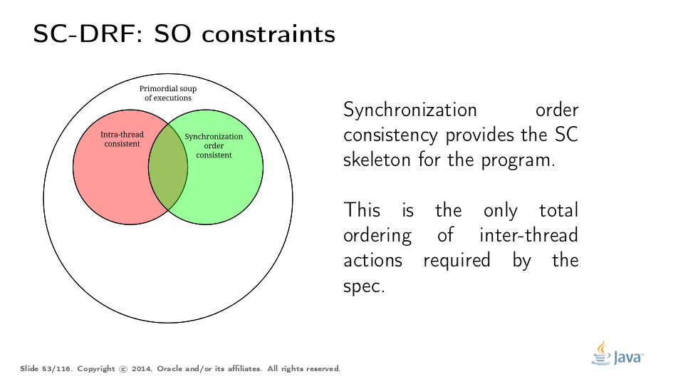
以我们的维恩图结束，SO一致性过滤掉同步“骨架”的执行。所有剩余执行的结果可以通过同步动作的程序顺序一致交错来解释。
Happens-Before

虽然为推理项目提供了良好的基础，但SO还不足以构建一个实用的弱模型。这就是原因。
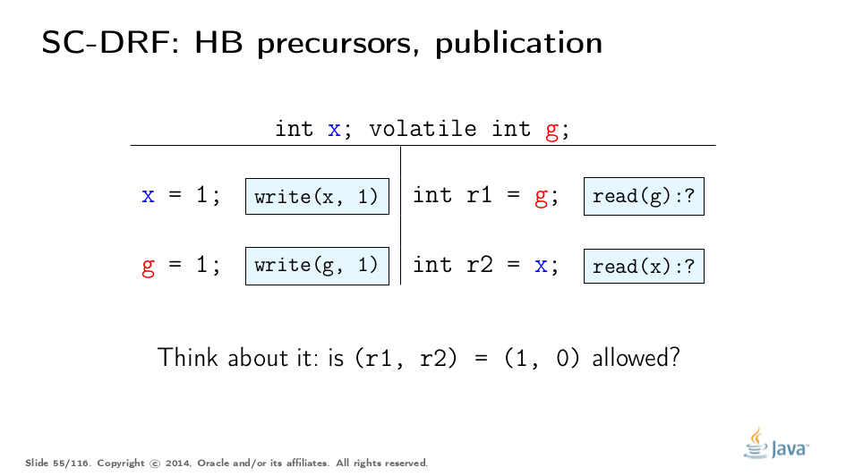
让我们分析一个简单的案例。鉴于迄今为止我们所学到的关于SO的所有知识，我们是否知道是否允许（1,0）结果？
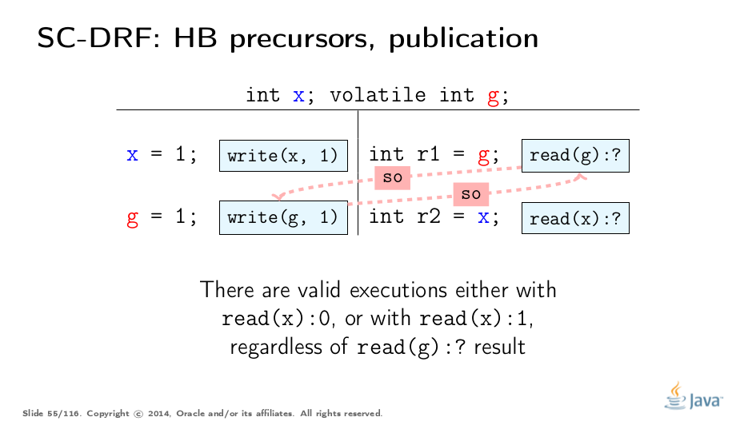
让我们来看看。由于SO只通过g命令动作，所以没有什么能阻止我们从x读取0或1。坏...

我们需要一些东西来连接线程状态，这将拖动非SA值。 SO不适用于此，因为不清楚它何时以及如何拖延状态。因此，我们需要一个明确的SO子序列来描述数据流。我们称此子顺序与顺序（SW）同步。

构建SW非常容易。 SW是部分顺序，并不跨越所有同步操作对。例如，即使此幻灯片上的g上的两个操作都在SO中，它们也不在SW中。
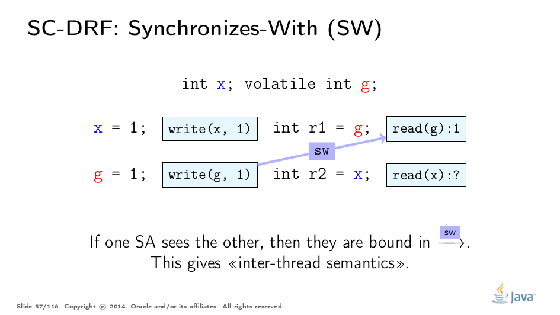
SW仅配对彼此“看到”的特定动作。更正式地说，对g的易失性写入与来自g的所有后续读取同步。 “后续”是根据SO定义的，因此由于SO的一致性，1的写入仅与1的读取同步。在此示例中，我们看到两个动作之间的SW。此子顺序为我们提供了线程之间的“桥梁”，但适用于同步操作。让我们将其扩展到其他行动。
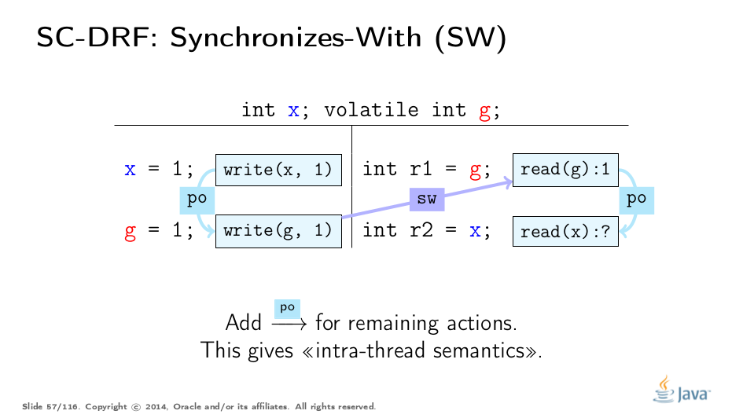
线程内语义由程序顺序描述。这里是。
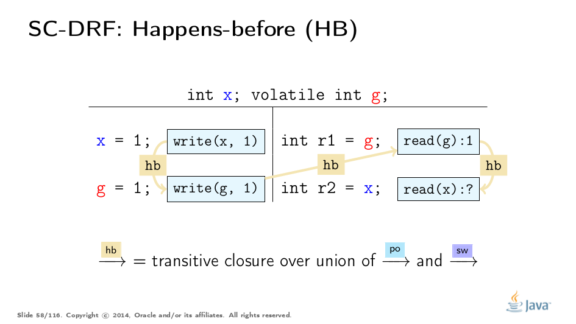
现在，如果我们构造PO和SW顺序的并集，然后传递关闭（[transitively close](http://en.wikipedia.org/wiki/Transitive_closure)）该联合，我们得到派生的顺序：Happens-Before（HB）。在这个意义上，HB获取线程间和线程内语义。 PO将有关每个线程内的顺序操作的信息泄漏到HB中，并且当状态“同步”时SW泄漏。 HB是部分顺序，允许使用重新排序的操作构造等效执行。

发生之前还有另一个一致性规则。记住SO一致性规则，它规定同步操作应该在SO中看到最新的相关写入。发生之前的一致性在应用程序中类似于HB顺序：它规定了特定读取可以观察到的写入。

HB一致性在允许竞争中很有意思。如果没有比赛，我们只能看到HB中最新的前一次写入。但是如果我们在HB中对于给定的读取进行无序写入，那么我们也可以看到（racy）写入。让我们更严格地定义它。
第一部分是相当轻松的：我们被允许观察发生在我们面前的写入，或任何其他无序写（这是一场比赛）。这是该模型的一个非常重要的属性：我们特别允许比赛，因为比赛发生在现实世界中。如果我们禁止模型中的比赛，运行时将很难优化代码，因为他们需要在任何地方强制执行命令。 请注意，在HB顺序读取后，如何禁止看到写入的写入。
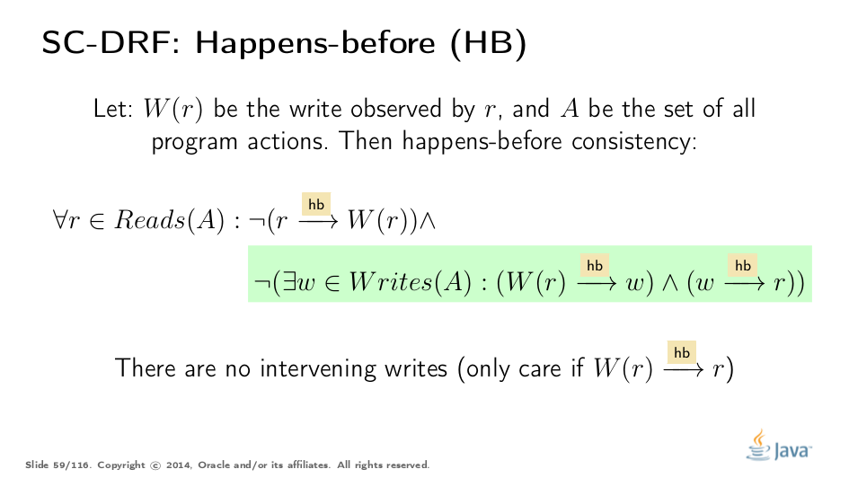
第二部分对看到前面的写入提出了额外的约束：我们只能看到最新的写入发生在先前的顺序。之前的任何其他写作对我们来说都是不可见的。因此，在没有比赛的情况下，我们只能看到最新的HB编写。
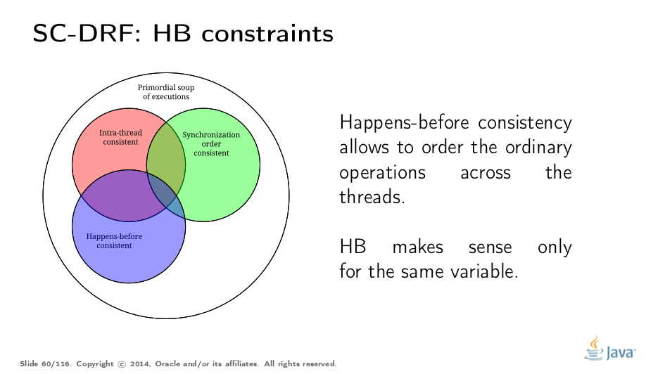
HB一致性的结果是过滤掉另一个执行子集，它们观察我们允许他们观察的内容。 HB扩展了非同步操作，因此允许模型包含执行中的所有操作。

这就是SC-DRF的全部内容：如果我们在程序中没有竞争 - 也就是说，所有的读写都是按SO或HB排序的 - 那么这个程序的结果可以通过一些顺序一致的执行来解释。有一个SC-DRF属性的正式证明，但我们将使用直观的理解为什么这应该是真的。
Happens-Before: Publication

上面的例子相当高深，但这就是语言规范的定义方式。让我们看一下这个例子来更直观地理解这一点。使用相同的代码示例，并使用HB一致性规则进行分析。

这种执行在一致之前发生：read（x）观察HB中的最新写入。结果（1,1）因此是合理的。

这个执行是在一致之前发生的，因为我们读取了x的默认值。我们省略了HB边缘的默认初始化，它与此图表上的线程中的第一个操作同步。
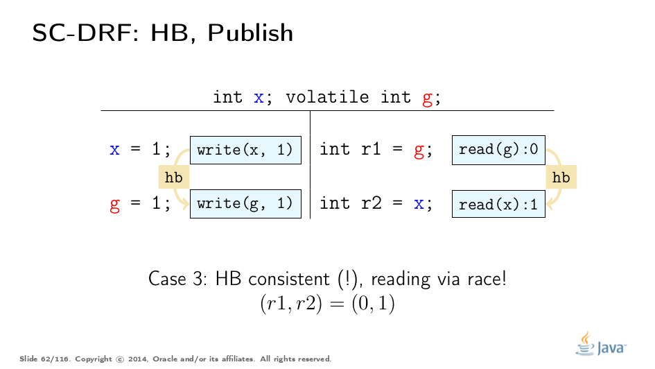
有些令人惊讶的是，即使在读取和写入x之间没有传递性HB，结果（0,1）的执行也会在一致之前发生。我们只是通过比赛读取值 - 记住HB一致性定义的第一部分。

并且此执行不能遵守HB一致性，因此不能用于推断程序结果。因此这种结果是不可能的。请注意，我们从四个可能的结果中消除了（1,0），这实际上意味着我们被迫将x视为1，如果我们将g视为1。

想要确定实际程序的HB命令会伤害脑细胞，所以我们可以得出一些简单的规则。同步边缘的来源称为“释放”，目的地称为“获取”。 HB包含SW，因此跨越不同线程的HB也从“release”开始，以“acquire”结束。
可以将释放视为将所有先前状态更新释放到野外的操作，并且获取是接收这些更新的配对操作。因此，在成功获得后，我们可以看到配对版本之前的所有更新。
由于我们之前提出的构造，它只有在获取/释放发生在同一个变量上时才有效，我们实际上看到了写入的值。下面的测验进一步探讨了这一点。
Happens-Before: Test Your Understanding
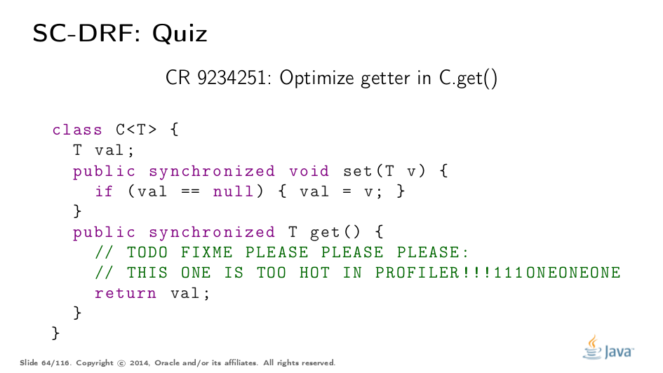
让我们在这里更现实地玩。假设你有一个包装类，它存储（（邮件）盒子）类型T的一些值。显然，你有一个取值的setter，以及返回它的getter。在大多数程序中，读取数量远远多于写入（否则为什么要存储值？），因此同步的getter可能会成为可伸缩性瓶颈。

人们带着他们的分析器，查看代码并争论：好吧，它只是一个简单的值T，我们将它存储在同步中，缓存通过同步刷新，因此我们可以跳过读取时的同步。 真的吗？答案（选择结束显示）：在设置器中确实有一个关于监视器解锁的释放操作，但是getter中缺少获取操作。因此，在我们读取另一个线程中的val之后，内存模型并没有要求将存储到val之前存储的值可见 - 如果那些是存储到val字段中则非常坏的消息。

说没有获得屏障吗？好吧，让我们添加一个，因为我们“知道”编译器为易失性读取发出一个。 这坏了吗？如果是这样，为什么？回答（选择结束以显示）：在当前的实践中，它适用于给定的保守VM实现，但是JMM方面，因为我们没有像发布时那样获取相同的变量，所以不能保证。简而言之，更智能的VM可以看到您不使用下沉值，因此可以假装我们没有看到屏障的更新（如果有的话），并完全消除它。
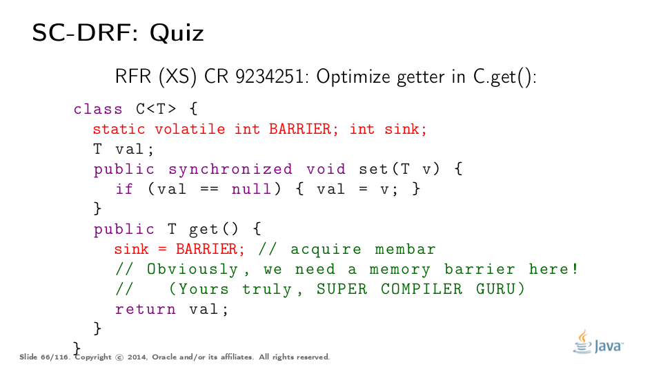
这是一种正确的方法。将字段标记为volatile可在setter中提供释放操作，并在getter中提供已配对的获取。这允许我们在getter中同步放松，并且只留下轻量级的volatile。 是否仍需要在setter中同步？回答（选择结束显示）：是的，因为setter需要互斥：它应该只设置一次val。
JMM Interpretation: Roach Motel

优化编译器可能很难确定特定优化是否破坏了JMM的规定。一些高级编译器可以直接构造内存流。但是，基本编译器人员需要一组简单的规则来确定是否允许某些内容。 JSR 133专家组创建了JSR 133 Cookbook for Compiler Writers来涵盖这一点。 值得注意的是，Cookbook是一套保守的解释，而不是JMM本身。我们将简要讨论如何得出这些解释。
考虑一个程序，可以通过此模板执行来表示。前两种重新排序很简单：

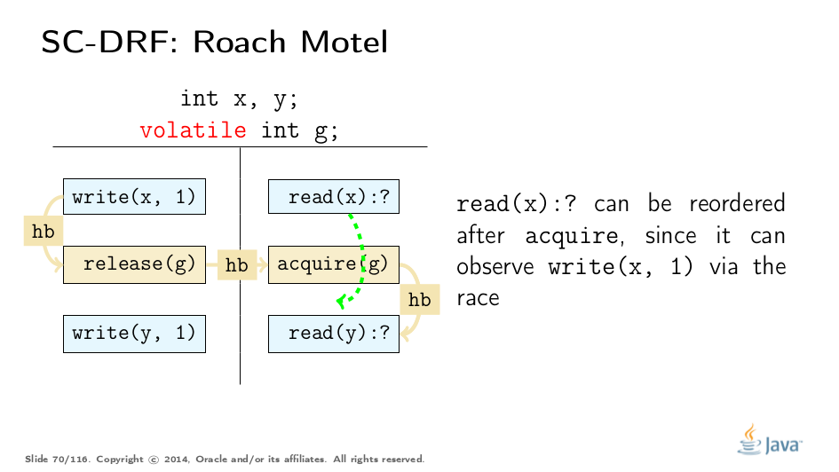

这些规则有效地允许将代码推送到获取/释放块中，例如，将代码推入锁定区域，这可以在不违反JMM的情况下实现锁定粗化。
保守地禁止另外两种类型的重新排序。请注意，JMM本身并不禁止它们，但如果本地分析无法确定正确性，则必须禁止它们（在某些情况下，例如构造函数中的字段存储，它可以）：
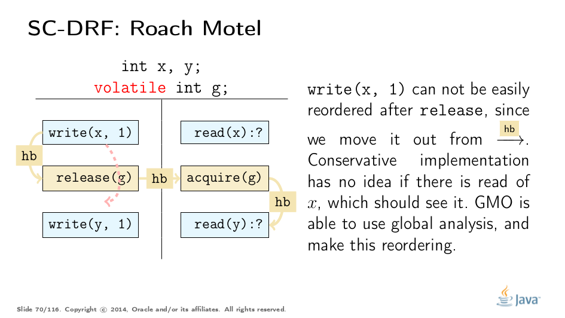
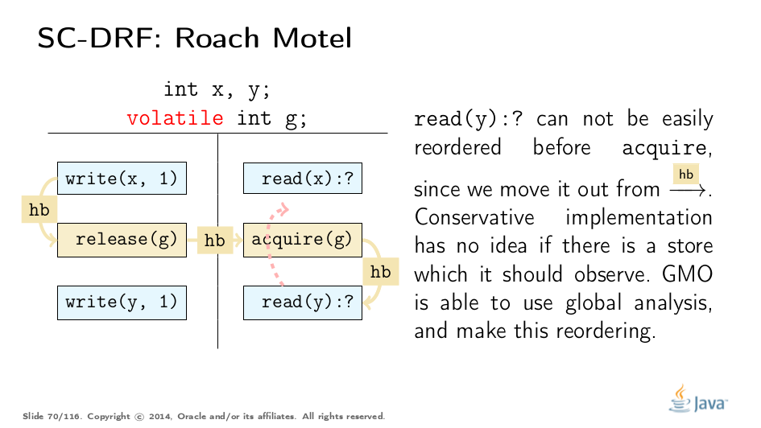
Test Your Understanding
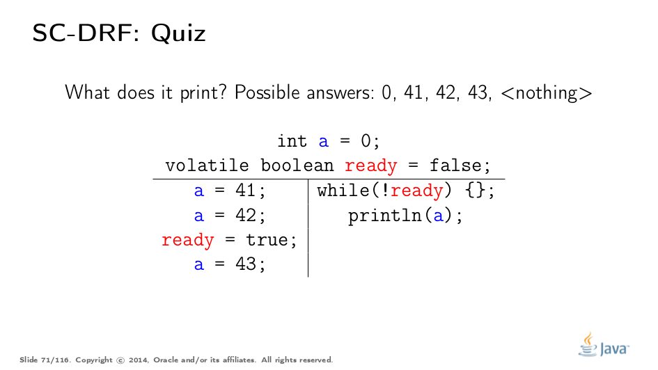
让我们再试一次真实的例子。 这段代码可以打印什么？答案（选择结束显示）：存储就绪之间存在同步边缘，并且读取就绪== true因此，我们可以看到HB顺序中的最新写入，即42。但是，我们也可以看到超出HB（racy）的写入，这也给我们带来了43。
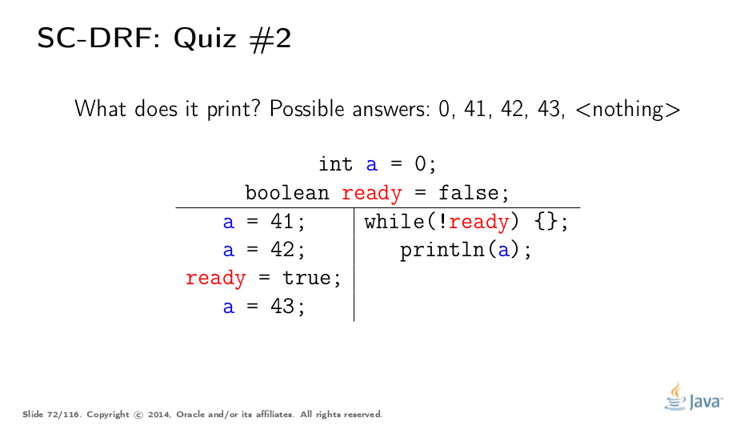
现在我们去掉volatile。 这段代码可以打印什么？答案（选择结束显示）：任何值都是可能的，因为我们可以通过竞赛观察任何值，并且如果while循环减少到while（true），我们也可以看不到任何值。
Benchmarks
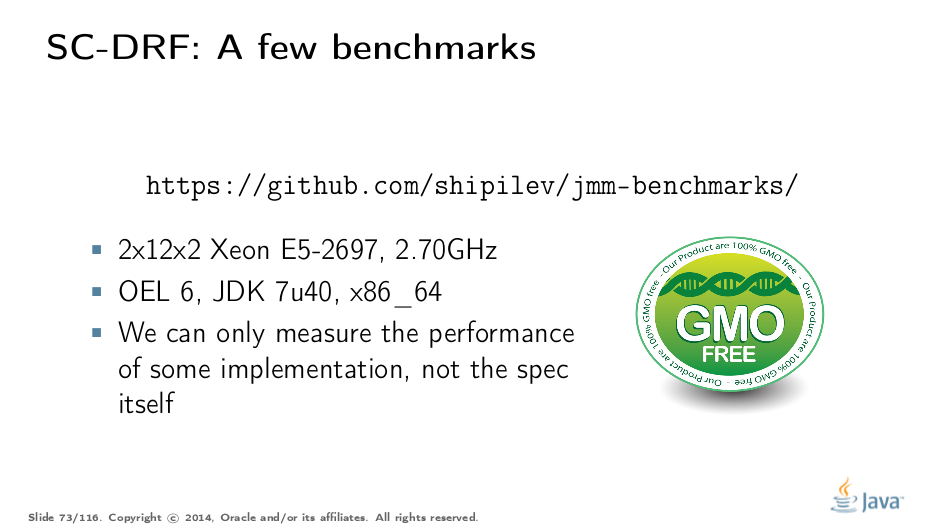
当然，在没有基准测试的情况下发布任何内容的用途是什么？我们想要量化至少一些成本。测量绝对数字并不是一个好主意，因此我们只会展示一些重要的高级别要点。基准测试由JMH驱动，我们假设您熟悉它。
让我们从“提升”基准开始。我们希望运行一个天赋计算v次v的综合测试。区别在于底层存储的共享和v易变性。毫不奇怪，当我们阅读内容时，分享似乎并不重要。
Volatile测试用例明显变慢。然而，它并不是挥发物本身的成本，而是过于保守的实施证明了将s.v推出循环的证据，这将在收购之前移动读数（参见上面的“罗奇汽车旅馆”）。将s.v预读成局部变量并再次测量是留给读者的练习。
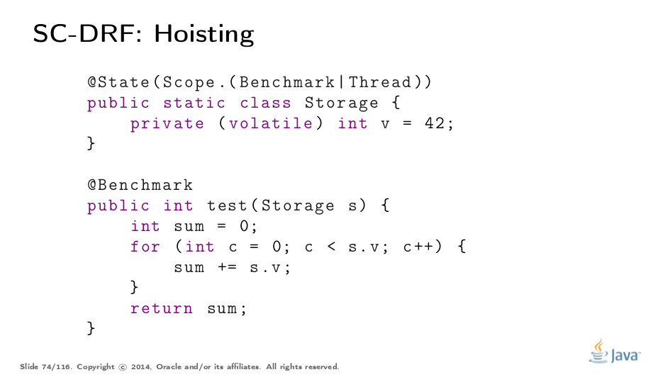
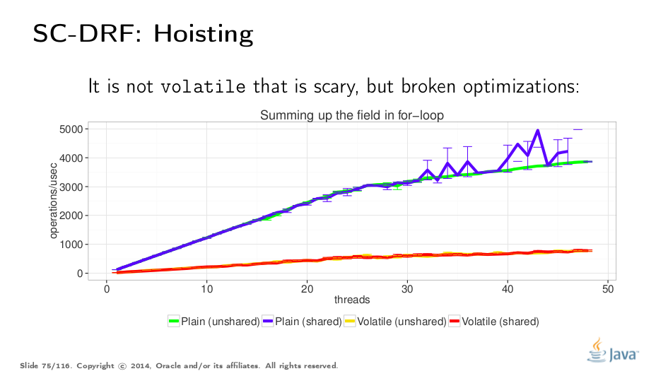
对于写入测试，我们可以开始递增相同的变量。我们做了一些退避以停止使用写入来抨击系统，在这里我们可以观察共享/非共享情况之间以及易失性/非易失性情况之间的差异。人们可能会认为不稳定的测试会全面失败，但我们可以看到共享测试正在失败。这强化了数据共享首先应该避免的想法，而不是volatiles。
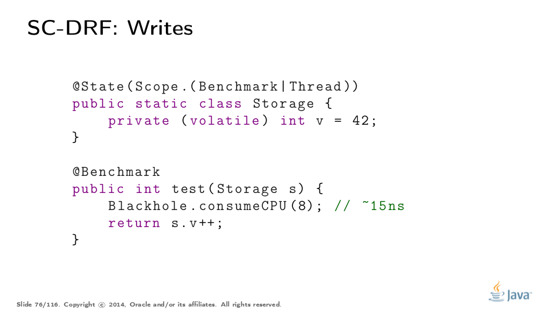
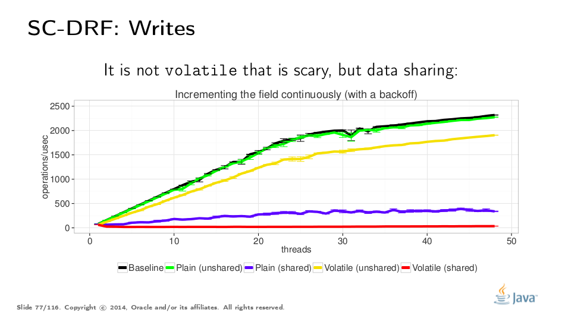
JMM Updates
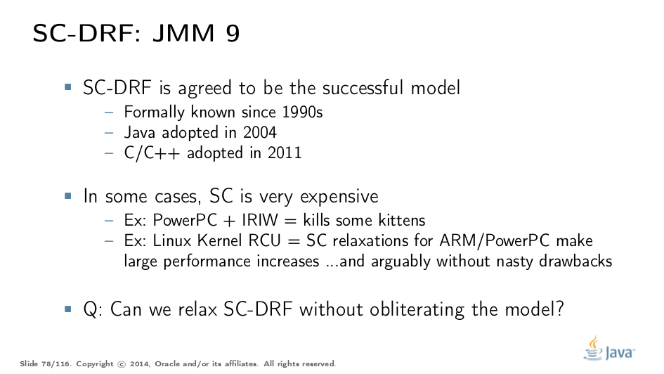
目前的主流语言似乎全面采用SC-DRF。但是，有证据表明严格支持SC-DRF可能对所有情况都不利。例如，Linux RCU放松了一些约束，在弱有序的平台上有非常好的性能改进，可以说这样做而不会破坏可用性。 因此，下一个JMM更新的问题是：我们是否应该放松SC-DRF以获得更高的性能？
Part IV: Out of Thin Air
我们想要什么
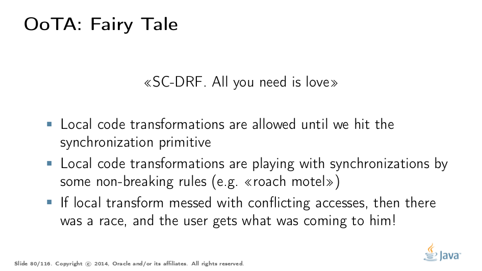
似乎SC-DRF成立后，我们很高兴。任何转换在同步操作之间都是有效的，因为如果代码中存在未注释的竞争，则行为是非SC开始的。教导运行时SC-DRF规则，你很好，对吗？
我们有什么
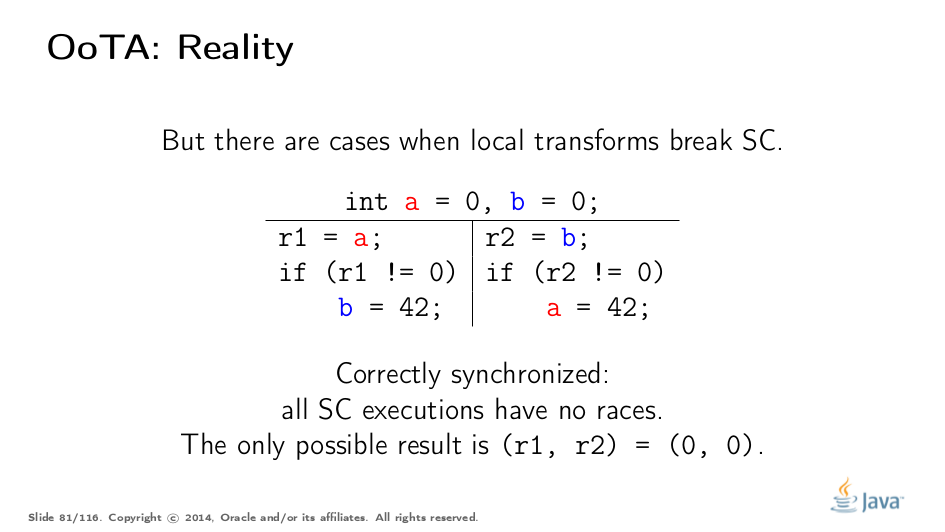
但是，这只是事实的一部分。一些转变仍然破坏了SC。考虑一下这个程序：有点令人惊讶的是，它是正确同步的，因为所有SC执行都没有比赛，唯一可能的结果是（0,0）
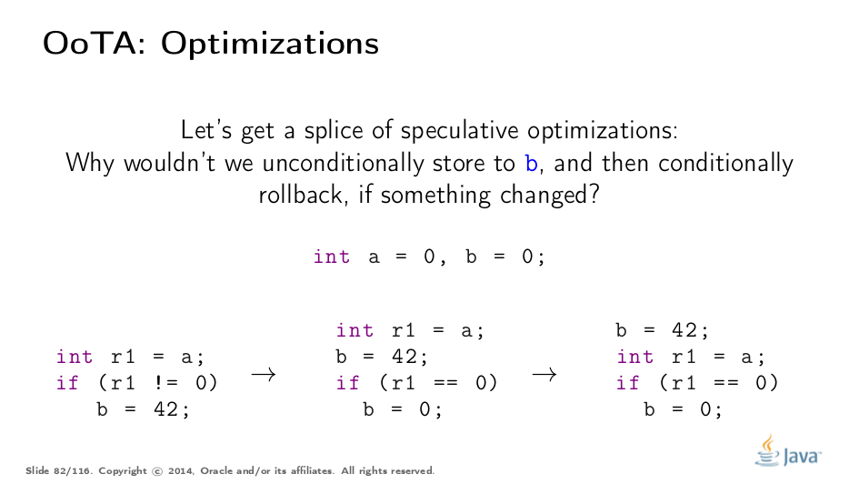
现在，优化运行时/硬件进入并尝试推测分支。如果推测失败，有时推测性地执行分支并退回可能是一个好主意。 假设我们在代码中做了这个推测。

我们现在执行修改后的程序。第二个线程未经修改运行。如果我们按照幻灯片上描述的顺序运行这个程序，我们将有（42,42），因为猜测已经变成了自我辩解的预言！好像42似乎是凭空产生的。 这个例子似乎是人为的，直到你意识到变量a很容易就是System.securityManager，而我们刚刚破坏了平台安全保障！可怕。

为了弥补这一点，JMM禁止超薄（OoTA）值。为了建设性地禁止OoTA，你需要一些因果关系的概念（即“什么造成了什么”），这在试图摆脱全球时间的致命拥抱的模型中引入是棘手的。

JLS 17.4.8中的整个部分试图严格指定“提交语义”，这另外验证了因果关系违规的执行。我们不会在这里深入了解细节，所以请尽情享受这个看起来像Bill的好人。
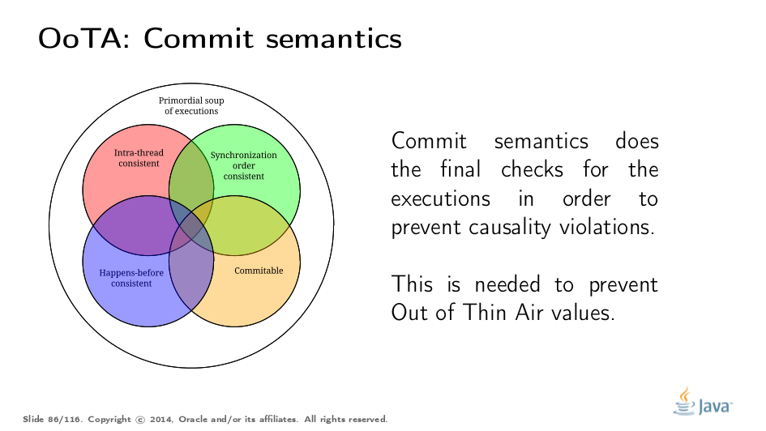
提交语义给出了执行汤中的最后一个过滤器。违反因果关系要求的执行不能用于推理该程序。
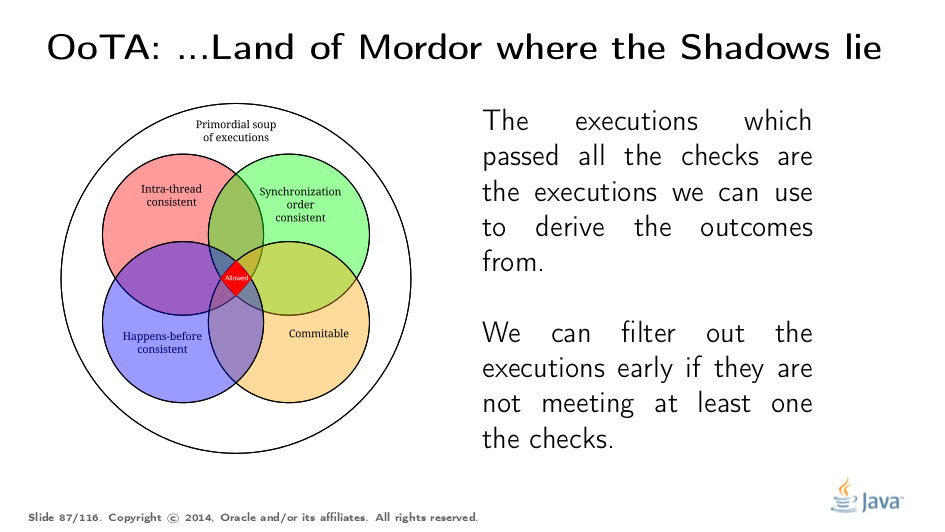
这将我们带到最后的画面。为了测试JMM下的执行是否合理，您需要查看它是否通过了所有要求。但请注意，您可以根据特定测试的失败快速分支并绑定所考虑的执行集。在大多数情况下，我们甚至不会提交语义，因为通过其他过滤器的所有执行都只产生了预期的结果，我们不再关心它们了。
OoTA and C/C++
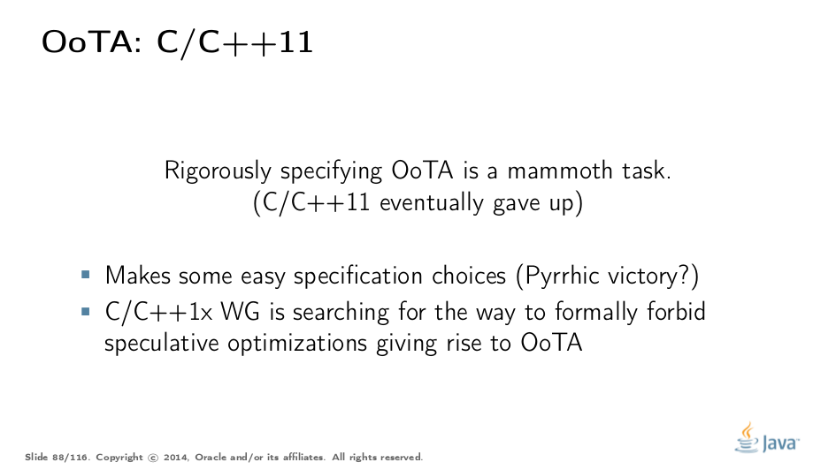
值得注意的是，到目前为止，Java似乎是唯一试图指定OoTA真正含义的平台。考虑到非常复杂且有时反直觉的因果关系模型，并非Java非常成功。
JMM Updates
因此，在下一个JMM更新中，我们会问最大的问题：我们可以重新制定/解决这个问题，使其更具防弹性，简洁性和可理解性吗？
Part V: Finals
Test Your Basic Understanding
既然我们已经学到了很多关于JMM的知识，那么让我们从这个简单的测验开始吧。这个程序打印什么？回答（选择结束以显示）：Nothing，0,42或者抛出NPE（！）。 Racy读取比比皆是，我们可以真正读取任何写入的值：默认值或构造函数中写入的值。我们甚至可以先观察（a！= null）并打印，只是为了实现第二次返回的racy读取（a == null），设置一个NPE。
What Do We Want
我们显然希望以这样的方式修改对象声明，即我们只获得42（或没有）。你可以猜到那里隐藏着五个问号，对吧？
我们需要这样来保护自己免受种族伤害。如果对象接收器恶意行为，我们就不能着火并破坏对象不变量 - 否则我们就无法编写安全代码。 如今，一些勇敢的人们围绕着比赛试图优化表现。请再次阅读Hans。
What Do We Have
与我们需要规范它们的方式相比，最终字段的实现非常简单。在大多数体系结构中，只需在构造函数的末尾放置一个内存屏障，并通过依赖项将对象字段的负载与原始引用的负载联系起来。完成。
然而，规范变得相当复杂。我们必须在一个语法不经意的规范中引用构造函数，并在构造函数的末尾引入特殊的冻结操作。直观地说，这个冻结动作使用在构造函数中初始化的值“粘贴”该字段。但是，它不会限制字段的可修改性（您仍然可以通过反射来规避最终结果），冻结只是关于初始化存储。
这是如何正式指定的。请注意，w和r2可能是也可能不是最终字段的写入和读取，它们也可能是普通非最终字段的写入和读取。真正重要的是包含冻结动作F的子链，一些动作a和读取最终场的r1 - 一起使r2观察到w。 请注意，需要两个新订单，取消引用顺序和内存顺序来限定冻结值的传播方式。
我们“只”需要确保从目标读取的所有路径通过F和最终字段读取导致冻结值的写入。
Constructive Example
这个例子被弗拉基米尔·西特尼科夫和弗拉基米尔·科瓦连科大大解开，对他们的称赞！这是基于他们的分析的可视化：
Premature Publication
这是Jeremy Manson的PoPL论文中的一个很好的例子。在那里，第一个线程初始化对象并将42存储到最终字段f，然后通过p“泄漏”对象引用，然后才通过q正确发布。 传统观点认为，最终的字段保证会因过早发布而消失，但实际上，第三个线程只观察完全构造的对象，我们只能找到合适的最终路径。 （参见上面的例子进行类比。） 然而，当通过p读取时，第二个线程突破了最终路径，因此可能观察到非冻结值。有点令人惊讶的是，通读q也可以观察到非冻结值。这是dr和mc命令的属性正式允许的，并且有一个实用的原因：
实用的原因是运行时可能会在发现最终字段后对其进行缓存！这意味着如果编译器发现p和q是同一个对象的别名，那么我们可以说r3 = r2，并用它来完成。所以，如果我们观察到构造不足的对象，我们的线程就会变得污秽，而且一切都崩溃了。
Test Your Understanding (tricky)
请注意，规范讨论了构造函数中的初始化，这里我们还有其他的东西。答案（选择结束以显示）：当然，我们将看到42或什么都没有。字段初始值设定项和实例初始值设定项在实例初始化过程中触发，可以说是构造函数的一部分。
JMM Updates
final-s存在很多问题，主要是与其他JMM元素的正交性有关。如果字段已经是volatile，那么如何在构造函数中实现初始化存储的可见性特别有趣。 （提示：不稳定是不够的，因为它符合规范，此时）。 从教学的角度来看，我们是否应该排斥那些忘记在构造函数中声明一次写入的用户，并让他们的代码在非x86平台上爆炸，这也很有趣。 因此，下一个JMM更新需要决定是否应该将最终字段保证扩展到在所有构造函数中初始化的所有字段。
Benchmarks
本节介绍更新的Java内存模型的最终字段注意事项。请参阅另一篇文章中更全面的解释。
当然，我们希望严格量化标记所有字段的最终成本。由于最终的字段存储在构造函数中需要内存障碍以用于弱有序的平台，因此我们还将ARM主机作为测试平台。
以下是基准测试：链接调用层次结构中的N个构造函数，为每个类初始化单个字段，并合并初始化所有N个字段。字段可以是普通字段或最终字段我们使用不同的N-s进行测试，以确定性能是否以合理的方式发生变化。
作为Total Store Order机器的x86没有内存屏障，因此所有四种变体之间的差异都在测量误差范围内，与N无关。
在弱有序的机器上，最终涉及一个真正的内存屏障，并且在绿色条上的执行时间中增加了屏障成本。此外，我们在每个超类中都有障碍，这解释了为什么红线需要线性更多的时间。我们可以教VM合并障碍，然后执行最终语义的成本会淹没在分配成本中。
Conclusion
当我们处理一个讨厌的JMM错误时，Doug放弃了一个智慧的宝石，应该很好地总结这个谈话。如果使用并发结构的人能够弄清楚这些结构何时以及何时起作用，那也是好事。希望这个讲话能够改善JMM的理解。
我们想在JMM中解决一些已知的问题......
...引起了“Java内存模型更新”的努力。
在一天结束时，为读者提供一些有用的链接：